Illustrations interactives
Des objets du quotidien et des phénomènes naturels dessinés comme à l'encre, en perspective isométrique, que l'on peut faire pivoter, explorer de l'intérieur et voir en fonctionnement.
Chaque figure est une page web autonome, réalisée par Claude à l'aide de Colorfigures, un module de compétences (skill) conçu par April Zhu. Aucune installation ni aucun compte ne sont nécessaires : il suffit d'ouvrir la page et d'utiliser les boutons.
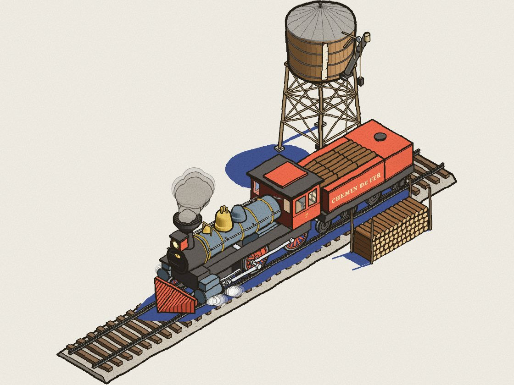
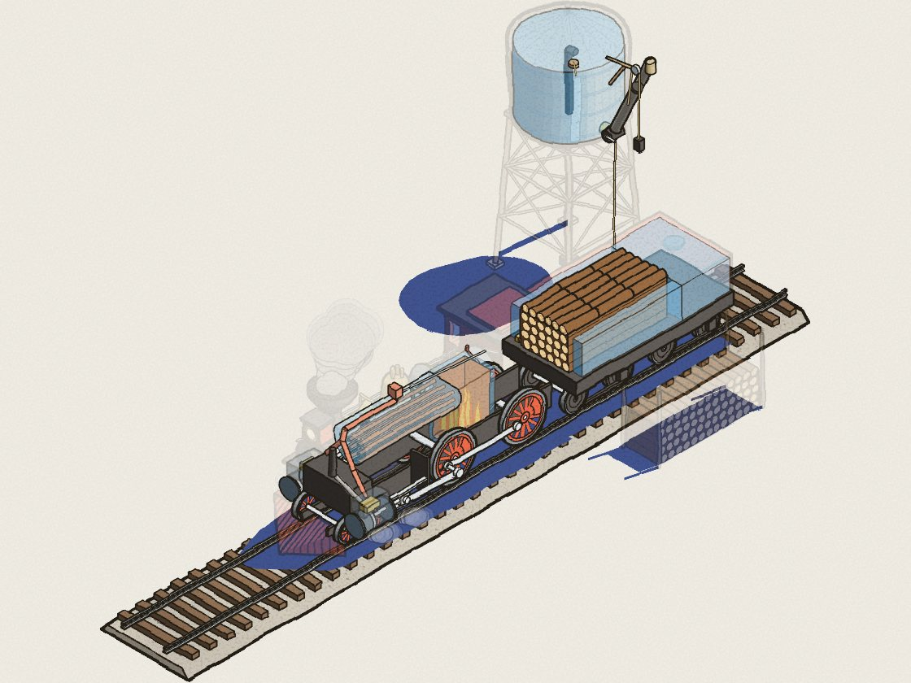
Survolez pour voir l'intérieurVue en transparencePrise en main
Faites glisser la figure pour en faire le tour, ou lancez la rotation avec le bouton « Faire pivoter ». L'arrière, les côtés et le dessous sont dessinés, eux aussi.
Le bouton « Transparence » estompe l'enveloppe de l'objet pour révéler son mécanisme. Le bouton « Étiquettes » nomme ensuite chacune des pièces.
Les boutons reprennent les étapes réelles, dans l'ordre où on les effectue. Chaque pièce suit son véritable trajet, et celles qui sont en action s'allument.
Collection
Survolez une vignette pour découvrir le mécanisme, puis cliquez pour manipuler la figure. Les figures s'utilisent également sur téléphone.
Une locomotive 4-4-0 à bois des années 1860 fait le plein d'eau au château d'eau, charge son bois, alimente son foyer, puis repart.
Ouvrir la figure →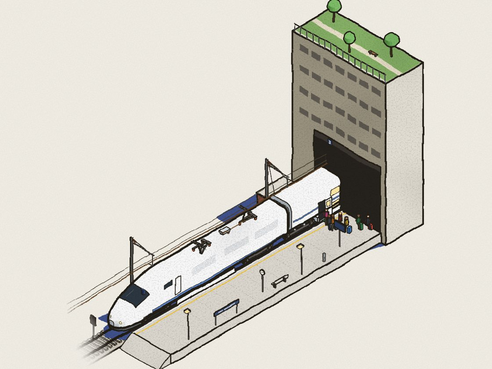
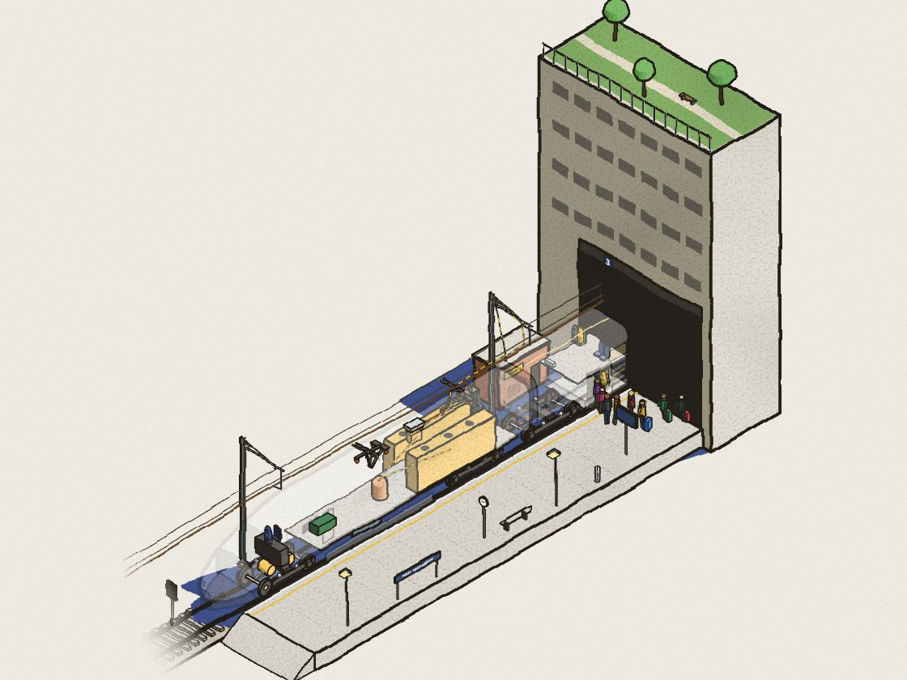
▶ OuvrirTransparence FIG. 02Un TGV Duplex attend sous la caténaire 1 500 V, à la sortie de la dalle du Jardin Atlantique : pantographe levé, embarquement des voyageur·euse·s, fermeture des portes, puis démarrage.
Ouvrir la figure →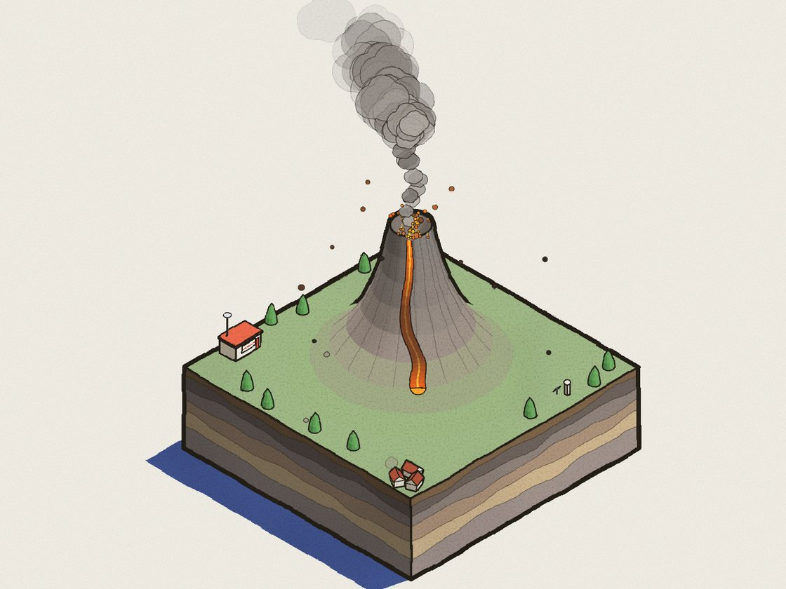
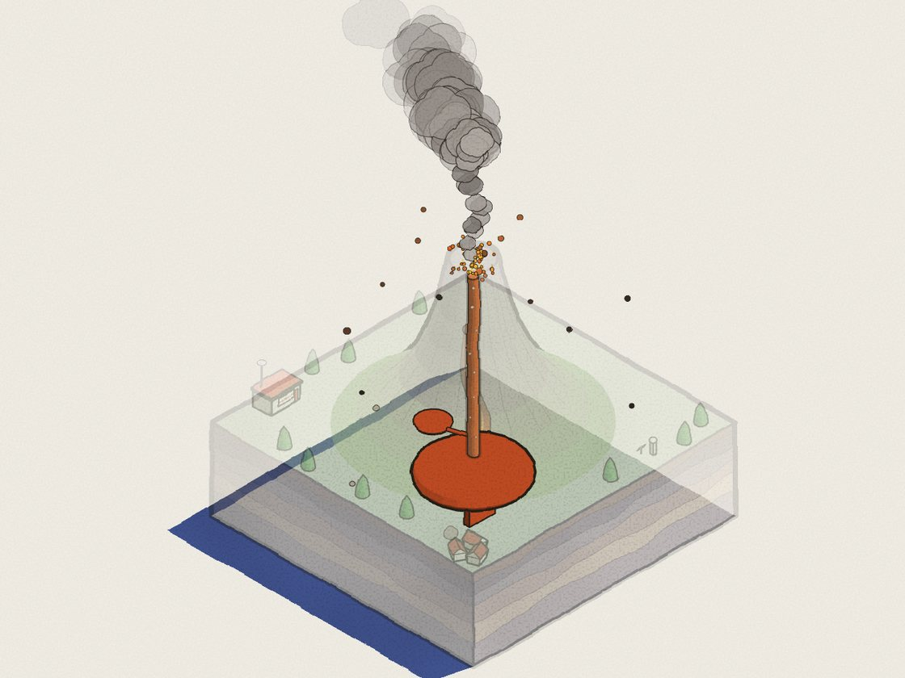
▶ OuvrirTransparence FIG. 03Un stratovolcan en bloc-diagramme : le magma remonte dans la chambre, le sol gonfle et tremble, puis viennent le panache éruptif, les bombes volcaniques et la coulée de lave.
Ouvrir la figure →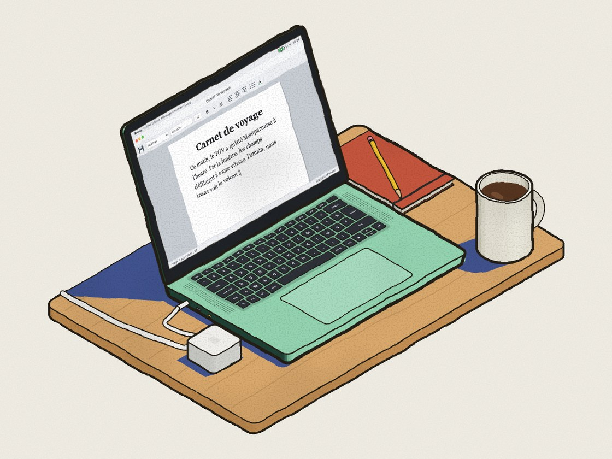
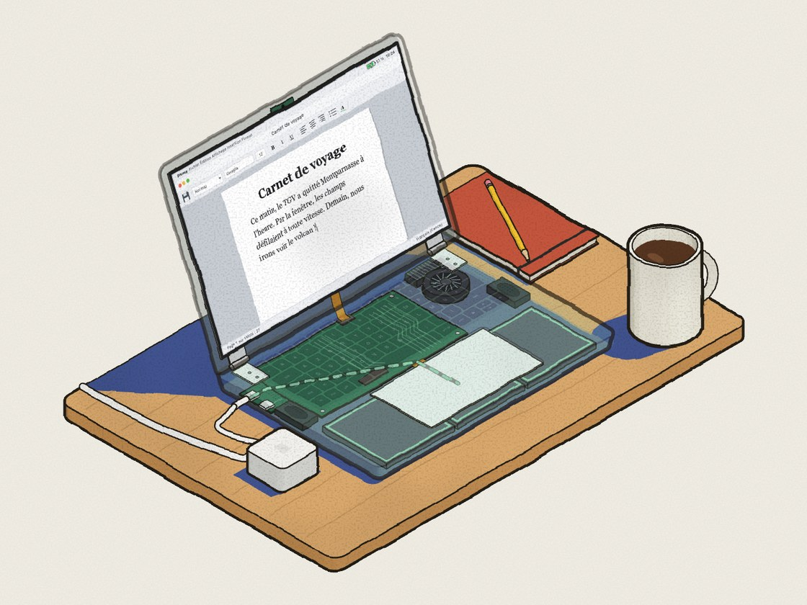
▶ OuvrirTransparence FIG. 04Un portable sur un bureau : on ouvre l'écran, on tape un texte sur un clavier AZERTY, on met le titre en forme, on enregistre, puis on branche le chargeur pour suivre le courant jusqu'à la batterie.
Ouvrir la figure →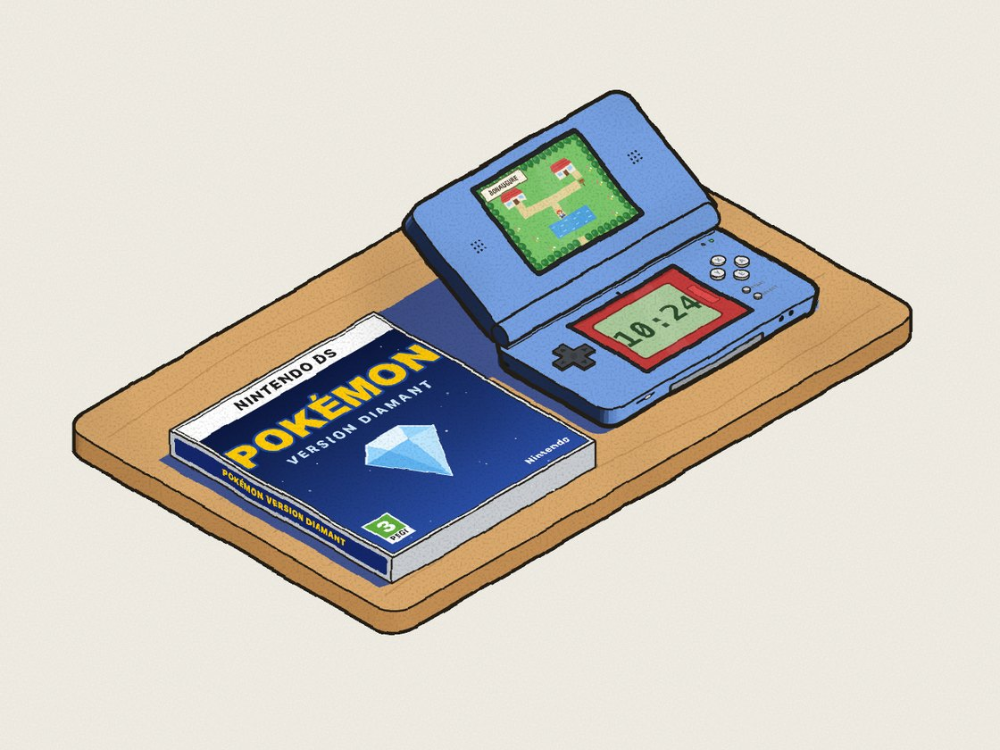
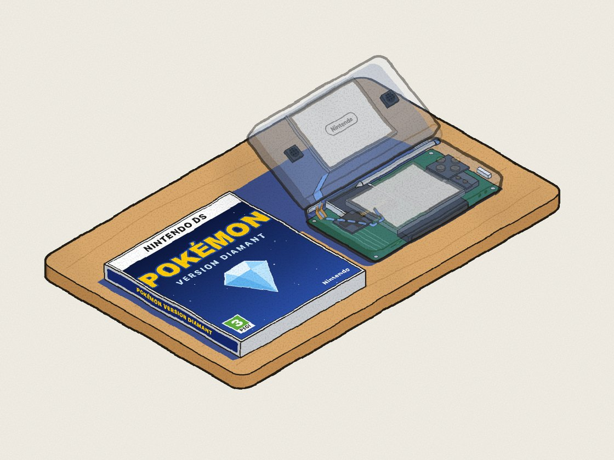
▶ OuvrirTransparence FIG. 05Une DS Lite et son jeu Pokémon : on ouvre la console, on glisse la cartouche dans la fente, on l'allume, on lance le jeu au stylet puis on appuie sur START pour faire ses premiers pas.
Ouvrir la figure →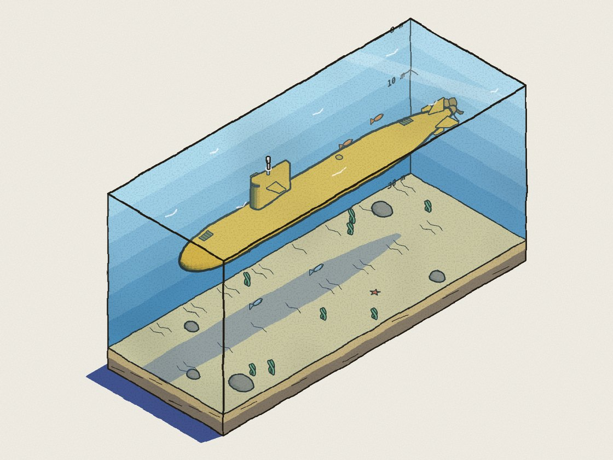
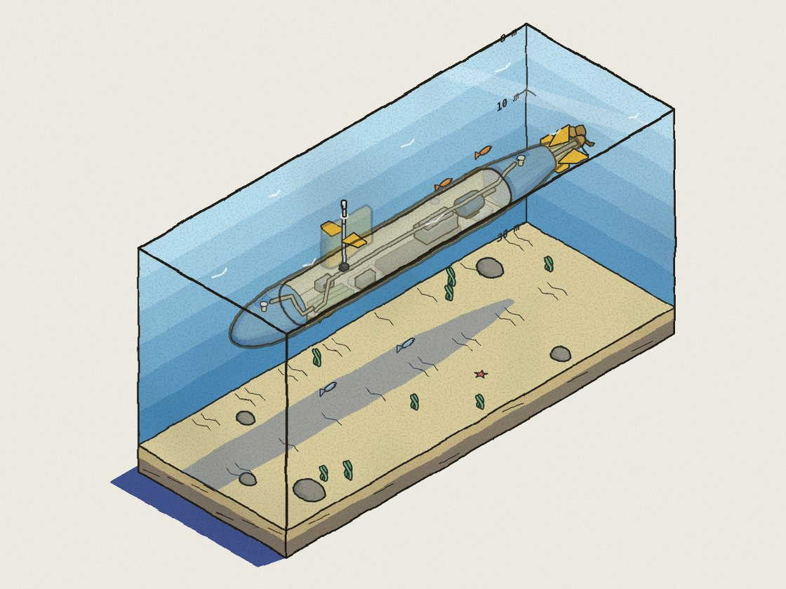
▶ OuvrirTransparence FIG. 06Comment un sous-marin flotte, plonge et remonte : on remplit les ballasts d'eau de mer, on descend avec les barres de plongée, on sort le périscope, puis on chasse l'eau à l'air comprimé pour refaire surface.
Ouvrir la figure →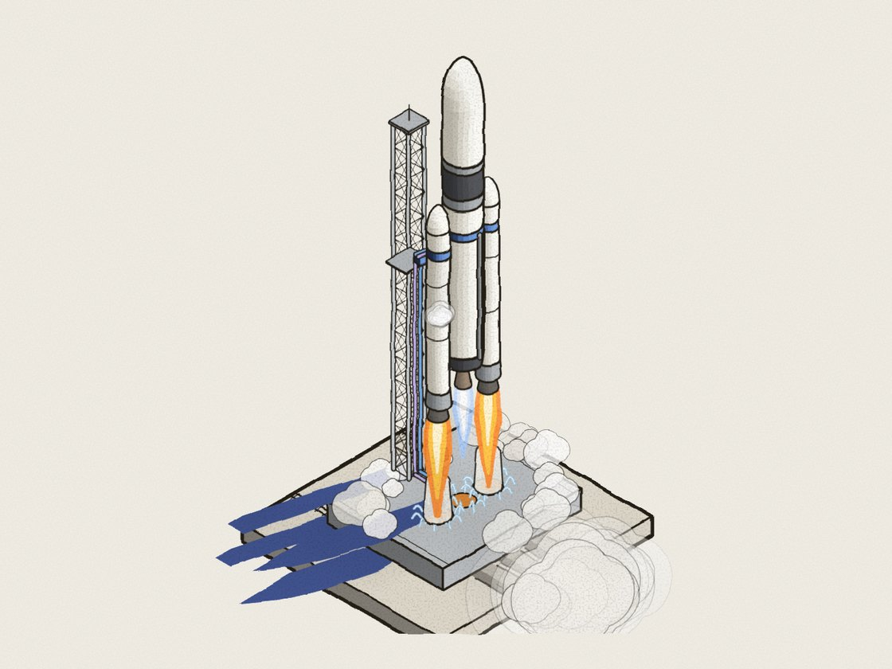
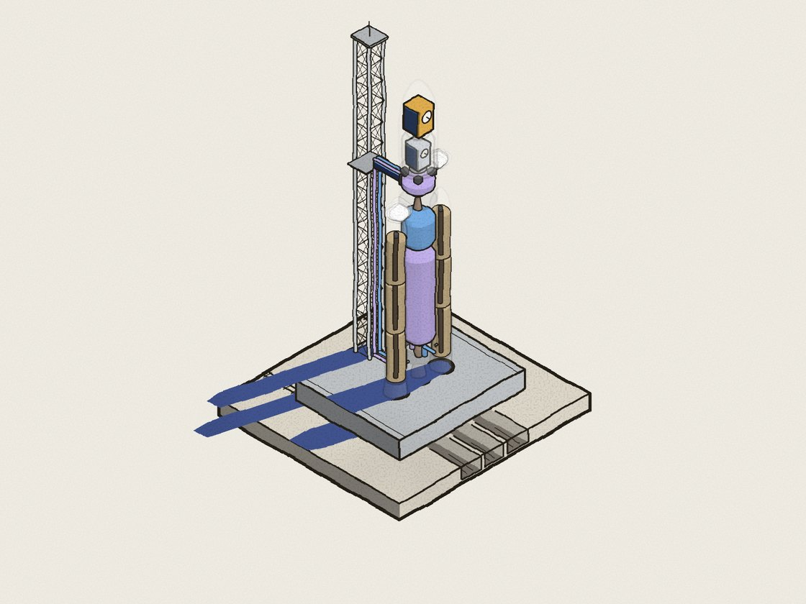
▶ OuvrirTransparence FIG. 07Le lancement d'Ariane 5 depuis Kourou, étape par étape : on remplit les réservoirs d'oxygène et d'hydrogène liquides, on décolle, on largue les boosters, la coiffe puis l'étage principal, et on libère les satellites en orbite.
Ouvrir la figure →Pour aller plus loin
Colorfigures a été imaginé par April Zhu. Sa page présente la démarche, de nombreux exemples et la façon d'installer le module dans Claude.